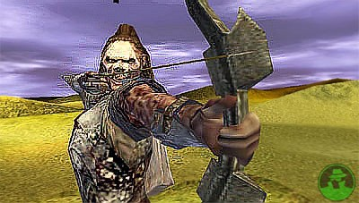

Forums galactiques > Taverne galactique : lieu de discussion informel > Election du meilleur Rp!!
| Horohoro Réputation à la taverne : 1130  30/09 ETU 13:57 | Score : 0 Détails bah ca va peut-être encore grimper? ^^
| ||
| valdred Réputation à la taverne : 105  04/10 ETU 14:55  | Score : 0 Détails UP
| ||
| Erdnaxel Réputation à la taverne : 6  04/10 ETU 14:58 | Score : 0 Détails Alors là chapeau!
Je ne sait pas comment vous avez eu cette idée mais en tout cas elle est très bien trouvée | ||
| Horohoro Réputation à la taverne : 1130 16/10 ETU 16:13 | Score : 0 Détails UP je remonte le sujet,ne voyant personne...
| ||
| valdred Réputation à la taverne : 105 17/10 ETU 13:47 | Score : 0 Détails horo il serait peut etre judicieux de remettre ca a plus tard, les JO de poésie ayant sans doute prit une place plus importante iol est difficile de faire plusieurs choses a la fois
| ||
| circee Réputation à la taverne : 3 17/10 ETU 19:05 | Score : 0 Détails Suite à d'intenses troubles sociaux et politiques sur leur terre originelle,
qui menacaient sa stabilité, il fut proposé au mouvement auquel Circée appartient, que d'importants moyens soient mis à la disposition de toutes les volontaires pour que celles-ci puissent émigrer vers une planète habitable récemment découverte. Cette proposition fut longuement discutée, et finalement acceptée, la guerre civile fut ainsi évitée. Située relativement proche du soleil, cette planète tourne rapidement autour de celui-ci. Elle est heureusement protégée de sa chaleur par une atmosphère dense et humide. Ce climat chaud et humide a permit à la flore apparue sur cette planète de s'épanouir à un niveau sans commune mesure avec la terre originelle. Même les océans sont recouverts d'une flore flottante. En dehors de quelques régions montagneuses, et de quelques plaines, la majeure partie de la planète est recouverte d'une jungle épaisse, aux plantes sans danger car l'absence de faune ne les a pas amenées à se créer des mécanismes de défense. Presque tout est donc comestible, la nourriture n'a donc jamais été un problème. Toute cette chlorophylle donne à la planète une magnifique couleur bleu-verte. Les trois lunes qui tournent autour de la planète offre un spectacle céleste majestueux. La société est décentralisée, basée sur de petites communautés éparses indépendantes et autogérées. La technologie est discrète, mais bien présente : un réseau satellite performant redirige l'énergie solaire et les communications vers un maillage de petites antennes discrètes disposées tous les cent mètres sur l'ensemble de la planète, permettant de communiquer, et d'alimenter des batteries rechargeables. C'est par ce réesau de communication que se gèrent les questions qui dépassent l'échelle locale, au niveau régional, continental, planétaire. Certaines communautés ont choisi d'être nomades, et circulent ainsi en permanence entre les communautés sédentaires, permettant des échanges matériels, culturels, .. qui ne peuvent transiter par le Réseau. Cette structure sociale riche et complexe permet de mêler harmonieusement diversité local et cohérence globale. Un phénomène étrange s'y produit : la combinaison des effets de marées des lunes et des périodes de reproduction des plantes provoquent à intervalles réguliers des vents de pollen très denses. A ces occasions, c'est toute la planète qui semble exploser de vie, et la population se réunit alors pour célébrer de grandes fêtes qui durent plusieurs jours, et renforcent les liens d'amitié. Il serait de toute façon impossible de continuer à travailler, ces pollens ayant d'étranges propriétés hallucinogènes (mais inoffensives). Une autre étrangeté de cette planète est l'absence de faune : il semble pourtant y avoir des traces d'une présence ancestrale (notamment de grands réseaux complexes souterrains, de véritables dédales s'enfonçant dans les profondeurs de la terre, et dont l'origine ne semble pas naturelle). Mais aucun animal n'a été aperçu depuis la colonistaion. L'espèce qui était ici a-t-elle disparue ? A-t-elle émigrée vers d'autres lieux ? A-t-elle évoluée vers quelque chose qui dépasse les perceptions humaines ? Certaines disent entendre des voix dans le vent de pollen qui leurs parlent, les soirs de sabbath, mais les plus rationnelles mettent ça sur le compte des propriété hallucinogènes ... Récemment, une femme nommée Pandore a découvert une entrée vers un complexe souterrain bourré d'une technologie inconnue sur cette terre. Par curiosité, elle l'inspecta, et parvint à réanimer toutes ces machines. C'est alors qu'un contact fut établi avec les autres civilisations de la galaxie. Circée repris alors les choses en main, essayant de faire en sorte que la mutation inévitable qui va suivre se passe au mieux pour son peuple. Seul l'avenir dira ce qu'il adviendra de cette paisible planète. (note : il y a aussi des hommes sur cette planète, mais la convention gramaticale inverse a été adoptée : au pluriel, le féminin l'emporte sur le masculin ;) |
Forums galactiques > Taverne galactique : lieu de discussion informel > Election du meilleur Rp!!